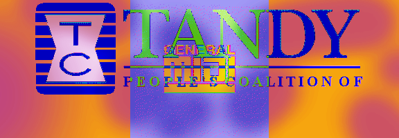

*31st Annual General MIDI Competition*
The 2024 Metaball–Lyke Baron PRIME Competition ZRainbow Geometrie 740
31...............................
an auspicious number to be certain! A prime number for THE SINGULAR MIDI Competition!
The People’s Coalition of TANDY “GiMi General MiDi,
31st "Metaball–Lyke Baron Biwene'd PRIME" Competition ZRainbow Geometrie 740 2024 Award!
Uh-oh, Travelers! The annual celebration of General MiDi has arrived in a time of DANGER for the ZRainbow. Lest the Grayking grey the ZRainbow, the MiDi must flow! We're so glad you have decided to join us for this special jubilee - an artful rest - as we power the Geometrie up with MiDi so that it may ward the Grayking's "Grayking Bick".
Here at P.C.o.T. we are not Worewéd or Afearéd...
In fact....... :::::
It is portentéd that this year's competition will go on smoothly as it's number of 31 (thirty-one) is in fact PRIME and NON-FACTORABLE, as is our SOLITARY MiDi in its GREATNESS!!
Thank the pantheons: For after all these years, MiDi is still as relevant as ever! Nevertheless, our celebrations are for General MiDi which is an amazing standard that could use more love! Welaway: every year we come together to honor this underappreciated standard!
We love MiDi and the POWER of ELEGANT, USEFUL STANDARDS!
YIPEE!
Uh-oh, Travelers! The annual celebration of General MiDi has arrived in a time of DANGER for the ZRainbow. Lest the Grayking grey the ZRainbow, the MiDi must flow! We're so glad you have decided to join us for this special jubilee - an artful rest - as we power the Geometrie up with MiDi so that it may ward the Grayking's "Grayking Bick".
Here at P.C.o.T. we are not Worewéd or Afearéd...
In fact....... :::::
It is portentéd that this year's competition will go on smoothly as it's number of 31 (thirty-one) is in fact PRIME and NON-FACTORABLE, as is our SOLITARY MiDi in its GREATNESS!!
Thank the pantheons: For after all these years, MiDi is still as relevant as ever! Nevertheless, our celebrations are for General MiDi which is an amazing standard that could use more love! Welaway: every year we come together to honor this underappreciated standard!
We love MiDi and the POWER of ELEGANT, USEFUL STANDARDS!
YIPEE!
- Submit a properly formatted General MIDI composition (.MID) to our Submission Form BY January 31st '24 ((((the 30th birthday of the !Revolutionary !Roland SC-88))))
-
All entries MUST be submitted in the form of a MIDI file (.mid) that abides to the General MIDI standard.
- ◊ Engraving software such as Sibelius, MuseScore, Finale, and Dorico are all General MIDI capable and can seamlessly format arrangements into General MIDI.
- ◊ DAWs such as Reaper, Ableton, Cubase, Logic, and Pro Tools can also generate General MIDI files, but Program Changes (ie. instrument selections) must be inputted manually. Certain DAWs may not be GM-compliant in their playback system, but that should not be a problem as long as you translate your program changes to their corresponding GM instruments. For those, there are many GM Soundfonts available which you can load into a sampler or sfz player!
- ◊ Here is a chart of all General Midi instruments and their corresponding Program Changes.
- ◊ Make sure you don't use audio plugins or outboard effects! The only acceptable effects will be the General MIDI standard Reverb and Chorus sends (effects 1 and 2; CC #91 and #93)!
- Audio files will NOT BE ACCEPTED! All submissions will recorded using the People's Coalition of Tandy's proprietary Midi hardware and sent back to contestants in high-resolution, lossless audio.
- 2.5 minutes or less! Our judges don’t got all day! And include a title!
- Feel free to email any questions to pcotandy@gmail.com or post them to our Facebook event page
- The overall winner of the competition will receive an modest cash prize and the official title of "The People’s Coalition of TANDY GM General Midi, 30th Anniversary Warrior of the 30 SMoidi Light 30, ZRainbow Spectrume 2022 300 Award"! Award category winners will receive prestigious bespoke titles for professional and personal use.

nana layout by cinni.net 2021